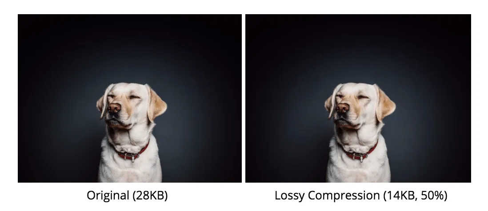

bestanden die veel details bevatten zoals afbeeldingen en geluidsbestanden nemen heel veel opslagruimte in. Ook kost het veel tijd om z ete downloaden. Er is hiervoor een oplossing en dat is bestand Compressie. bestanden worden daardoor kleiner dus, minder opslag ruimte en snellere download. Er zijn twee verschillende soorten bestandcompresie: lossy compression en lossless compression.
Bij lossy compression wordt er informatie uit je bestand verwijderd en aangepast, waardoor je bestand kleinder wordt. Bijvoorbeel bij een foto met veel verschillende kleuren en tinten kunnen er een paar tinten veriwjderd worden omdat het toch lastig is om te kunnen zien met je ogen. Kijk naar de foto hieronder. De kwaliteit van je bestand zal wel een beetje afnemen. Een voorbeeld van lossy compressie is de JPEG- of JPG-methode die je telefoon gebruikt. Hierbij past je telefoon automatisch compressie toe om ruimte op te slaan door de bestandsgrootte te verkleinen.
Bij lossless compression wordt er geen informatie verwijderd en de kwaliteit wordt niet beinvloed. De inhoud wordt op een andere efficientere manier opgelsagen. Een bestand met lossless compression kan altijd worden terug gezet naar het originele beeld. Bij een lossy betsand kan dat niet.